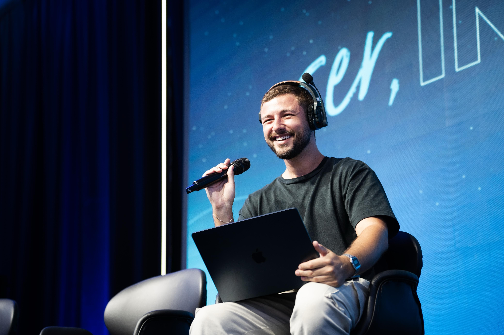

Direção Artística · Roteiro · Conteúdo
Para transformar eventos em narrativas memoráveis.

Curitiba, BR
Direção artística, roteiro e gestão de conteúdo — do conceito à execução, com uma visão construída dentro e fora do palco.
Sobre
Trabalho com eventos há alguns anos e já passei por praticamente todas as etapas de uma produção — do atendimento à operação em campo. Hoje, concentro minha atuação em direção artística e gestão de projetos. Essa vivência me dá uma leitura bem prática do que funciona, do que exige cuidado e até onde dá pra tensionar uma ideia.
Sou formado em Relações Públicas (UFPR), com pós-graduações em Cinema (PUC-PR) e Gestão do Entretenimento (PUC-Rio). Em paralelo, atuo no teatro como ator, produtor e diretor. Isso atravessa diretamente a forma como penso roteiro, ritmo e presença de palco.
Entre os projetos, assinei a produção geral do Prêmio Bom Gourmet (2023 e 2024), na Ópera de Arame, e da Premiação Agrinho (2023 e 2024), com milhares de convidados em Curitiba. Como diretor artístico e roteirista, já trabalhei em diferentes estados, além de projetos nos Estados Unidos e no México, para marcas como Ademicon, John Deere, XP Investimentos, Chilli Beans, TIM, Unidas, Volvo e Bosch.
Marcas com quem trabalhou
O que faço
Cada entrega parte de uma pergunta simples: o que você quer que as pessoas sintam?
Do conceito ao palco — condução narrativa, direção de housemix, orientação técnica e direção de palco integradas numa visão única. Cada detalhe de luz, cena e timing a serviço de uma experiência com identidade, ritmo e intenção.
Roteiros criativos para eventos corporativos que funcionam como histórias: com começo, meio e fim. Uma linha coesa que transforma cada fala, transição e tom em uma experiência que os convidados não esquecerão.
Coordenação de materiais audiovisuais e infográficos para grandes eventos e convenções. Garantir que tudo o que aparece na tela converse com o restante do evento, respeitando a demanda técnica e o timing de planejamento.
Trabalhos
Contato
Vamos mudar isso juntos?